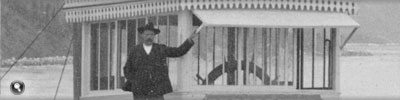
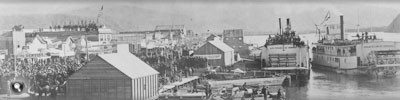
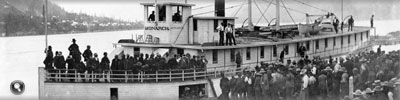
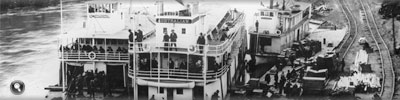
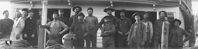
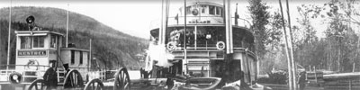

In July of 1900 the White Pass & Yukon Route (WP&YR) railway was completed from Skagway, on the Alaskan coast, to Whitehorse, making it practical to transport freight and passengers on boats via the upper river, from Whitehorse to Dawson City.
In the late 19th century, the lower river — from Dawson City to St. Michael, at the river’s mouth on the Bering Sea — had been the dominant route into the Yukon interior.
It was 1500 miles (2400 km) — upstream — from St. Michael to Dawson, and the earliest that freight arrived in Dawson via the lower river was the second week of June.
Skagway was a thousand miles closer than St. Michael to the supply centres of Seattle and Vancouver, and from Whitehorse it was only 500 miles (800 km) — downstream— to Dawson City. With the completion of the railway, the upper river route acquired a dominance that it never lost.
Although a small steamer, the S.S. Yukon, travelled as far upriver as Fort Selkirk in 1871, it wasn’t until the Klondike Gold Rush that the first sternwheelers appeared on the upper river. By 1900 there were 23 sternwheelers on the upper river and several transportation companies were in operation.
WP&YR set up a river division, the British Yukon Navigation Company, (BYN Co.) in 1900; within three years BYN Co. owned all but three boats on the upper river.
Sternwheelers, including the S.S. Dawson and S.S. Yukoner, at the foot of Main Street, Whitehorse, circa 1900.
Yukon Archives, E.J. Hamacher fonds (Margaret and Rolf Hougen collection), 2002/118 #24
Steamer Dawson being launched from the ways at Whitehorse at the beginning of the 1906 navigation season.
Yukon Archives, E.J. Hamacher fonds (Margaret and Rolf Hougen collection), 2002/118 #79
Wheelhouse of S.S. Prospector
Yukon Archives, Scott/Phelps family collection, 89/31 #59
Sternwheelers Gov. Pingree and Philip B. Low, Dawson, circa 1898.
Yukon Archives, Anchorage Fine Arts Museum collection, #2435
A crowd greets the S.S. Monarch, July 21, 1898, in Dawson. It was the first steamer through from St. Michael that year.
Yukon Archives, MacBride Museum collection, #3806
Bow of boat under construction at Whitehorse.
Yukon Archives, William Puckett fonds, 82/344 #16
Before the completion of the railway, freight was shipped from Bennett to Canyon City (shown here, circa 1898), offloaded and portaged along Miles Canyon and reloaded at Whitehorse.
Yukon Archives, Eric Hegg fonds, #2695
The S.S. Bailey, stopped to load wood on the Fiftymile River, circa August 1899.
Yukon Archives, H.C. Barley fonds, #5201
The launch Kestrel and the S.S. Whitehorse, with a barge, docked at Big Salmon.
Yukon Archives, J.P. Kingscote fonds, 84/32 #39
Yukon Archives, Anton Vogee fonds, #478